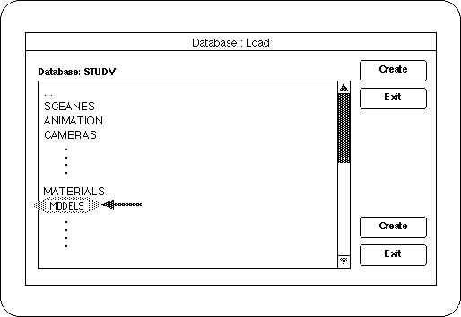

<HTML>
<HEAD>
<TITLE> Loading data </​​TITLE>
</HEAD><BODY>

<P> <A HREF="des1-2-6.htm"> Return to previous page </A> | <A HREF="../index.htm"> Return to menu </A> | <A HREF = "../ beginner / des2-1.htm"> Go to next page </A> </BR> </P> <HR>


<H3> Loading data </​​H3>

<P> <B> [Get] → [Element] </B> <BR>
Choose. <BR>
A window like the one below will appear. </P>
*
<H4> Figure 1-12 Model loading </H4>


<P>
Double-click “MODELS” here. <BR>
Saved items appear in “MODELS”. Click on the file and then “Load” to load the selected file. <BR>
If there are multiple files you want to load, hold down the “SHIFT” key and click on the files one after another, and finally execute “Load”. </P>

<!--This document was created using BeyondPress (TM) 1.0.3-442446 .-->
<HR>
<P> <A HREF="des1-2-6.htm"> Return to previous page </A> | <A HREF="../index.htm"> Return to menu </A> | <A HREF = "../ beginner / des2-1.htm"> Go to next page </A> </BR> </P> </BODY> </HTML>